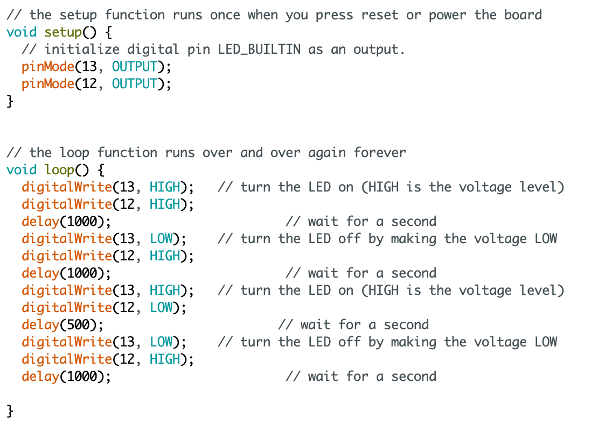

In deze opdrachten moesten we ervoor zorgen dat de groene led twee keer zo snel knipperde als de gele led. Voor deze opdracht hadden we al wat informatie gekregen. Dit was een afbeelding waarin stond hoe we de ledjes moesten aansluiten en een gegeven code. De opdracht was om die code dus zo aan te passen dat de groene led sneller knipperde als de gele led. In de code is te zien dat we beide ledjes aanroepen met de pinMode. Nummer 12 en 13 zijn de nummers waarmee de ledjes verbonden zijn aan het arduino bord. Daarna is in de code te zien dat er een loop word gemaakt wat ervoor zorgt dat de ledjes de functie blijven uitvoeren. De HIGH en LOW vertellen de ledjes wanneer ze aan (high) en uit (low) moeten zijn. Door het delay aan te passen naar 500 veranderd de snelheid en zorgt ervoor dat de gele en groene led van elkaar verschillen.
